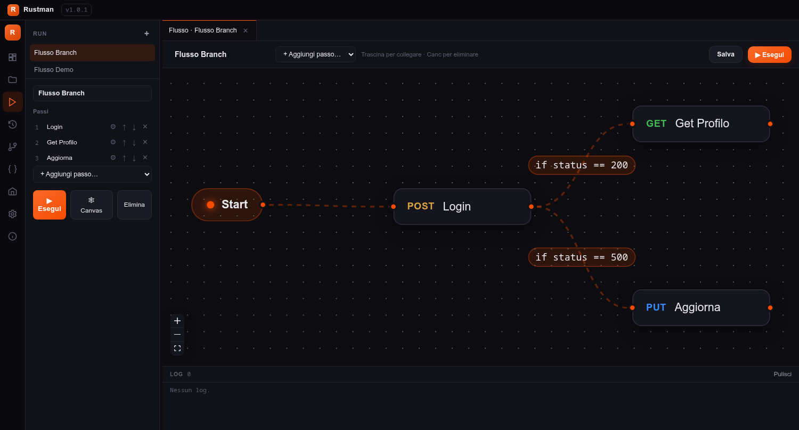
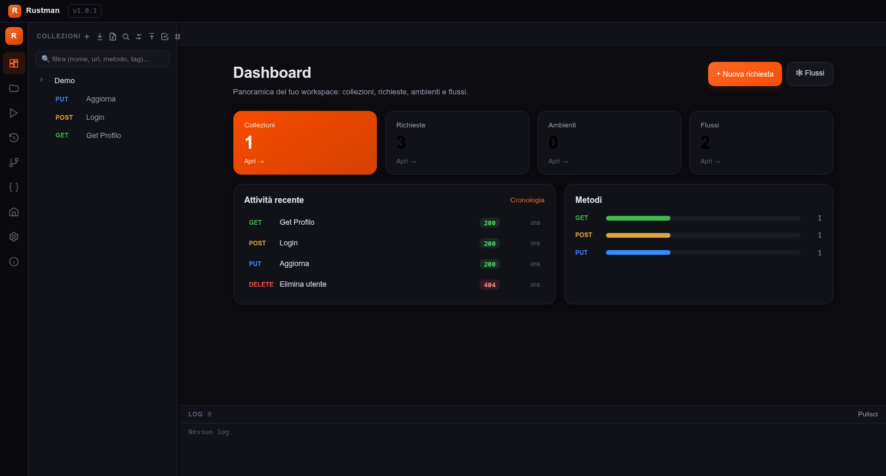
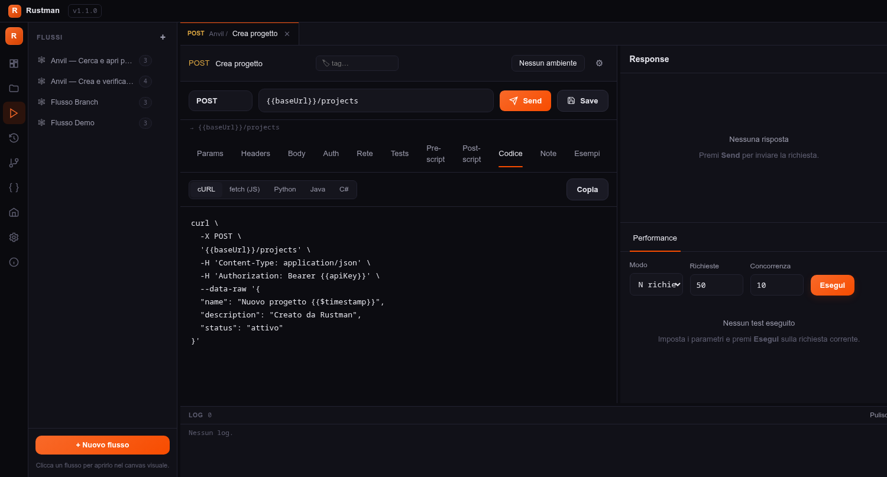
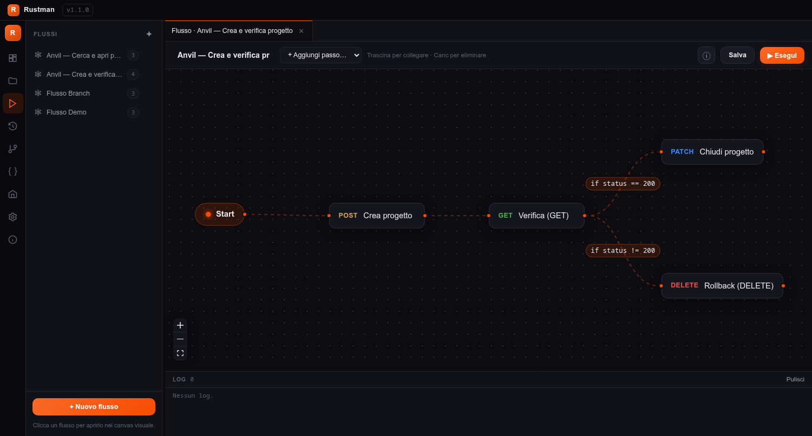
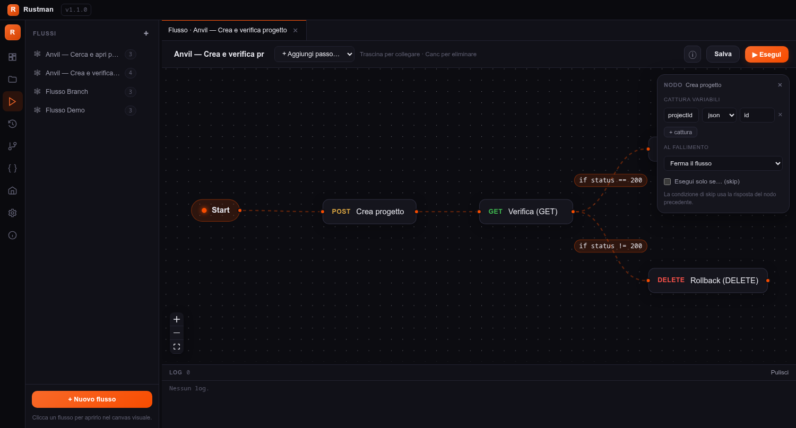
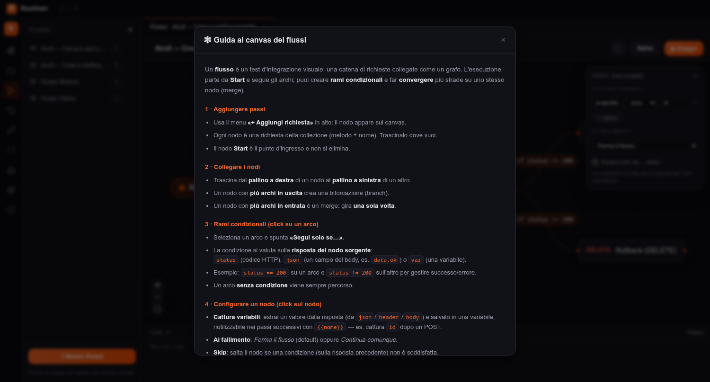
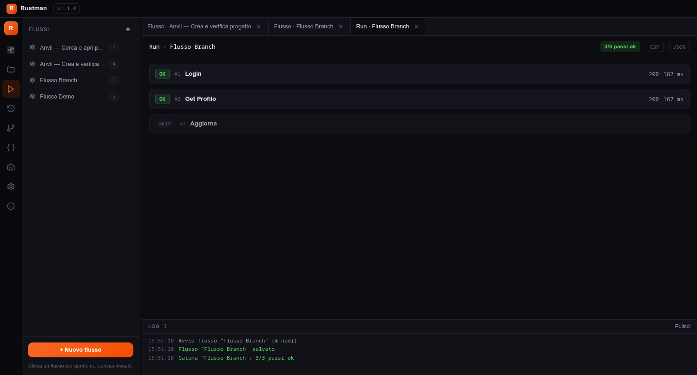

Ispirato a Postman, scritto in Rust. Veloce, leggero, con Git integrato e un canvas a nodi per costruire i test d'integrazione come un grafo — con rami condizionali e merge reali.

Rustman unisce la comodità di un client API moderno alla velocità di Rust e Tauri. Le collezioni sono file JSON versionabili con Git, gli ambienti gestiscono variabili e segreti, e lo stesso motore che gira nell'app esegue le suite in CI da riga di comando.
Costruisci catene di chiamate su un canvas: rami condizionali sugli archi, cattura di variabili e merge, con esecuzione a grafo.
Home con KPI del workspace, attività recente e distribuzione dei metodi HTTP a colpo d'occhio.
Commit, diff, cronologia e remote con pull/push direttamente sul workspace delle collezioni.
Asserzioni su status/JSON/JSONPath, JSON Schema, snapshot/golden testing e script pm.*.
Test di carico a durata/RPS con warmup, grafici e gate SLO su p95 ed error-rate.
Genera lo snippet della richiesta in cURL, fetch (JS), Python, Java e C#.
Editor GraphQL con introspezione, console WebSocket e stream di eventi Server-Sent Events.
Postman, OpenAPI/Swagger, cURL e HAR. Mock server e generatore di documentazione HTML.
La Home riassume collezioni, richieste, ambienti e flussi, con l'attività recente e la distribuzione dei metodi. L'accento è personalizzabile a runtime (Rust, Verde, Viola o un colore a scelta).

Concetti, esempi e diagrammi per usare ogni funzione del software.
Rustman è un monorepo: la logica vive in un core Rust riutilizzato da tre "guscі" (desktop, web, CLI). Il frontend Svelte è identico su desktop e web — cambia solo il trasporto verso il backend.
core è condiviso: la stessa logica alimenta app desktop, server web e CLI. Il frontend parla al backend via comandi Tauri (desktop) o REST /api (web).Un workspace è una cartella. Ogni collezione è una sottocartella con richieste salvate come file .json (anche in cartelle annidate). Essendo file di testo, tutto è versionabile con Git.
# struttura tipica di un workspace workspace/ Anvil/ # una collezione crea-progetto.json cerca-progetti.json environments/ # ambienti anvil.json runs/ # flussi (workflow) anvil-crea-verifica.json .rustman-secrets.json # segreti, gitignorati
.rustman-secrets.json, che è gitignorato.Le variabili si richiamano con la sintassi {{nome}} in URL, header, query e body. Un ambiente (es. staging, prod) definisce i valori; puoi cambiarlo al volo. Esistono anche variabili dinamiche e faker.
| Tipo | Esempi | Uso |
|---|---|---|
| Ambiente | {{baseUrl}} · {{apiKey}} | Valori per-ambiente, con segreti |
| Dinamiche | {{$timestamp}} · {{$randomUUID}} · {{$randomInt}} | Generate all'invio |
| Faker | {{$name}} · {{$email}} | Dati finti realistici |
| Catturate | {{projectId}} | Estratte dalle risposte nei flussi |
L'editor organizza tutto in schede: Params, Headers, Body (raw, form-data con upload, x-www-form-urlencoded), Auth (Bearer, Basic, OAuth 2.0), Rete (timeout, redirect, TLS, retry 429), Tests, Pre/Post-script, Codice, Note ed Esempi.
La scheda Codice mostra la richiesta corrente tradotta in cinque linguaggi, pronta da copiare. Header, autenticazione, query e body vengono riportati fedelmente.

// Java 11+ (java.net.http) HttpRequest request = HttpRequest.newBuilder() .uri(URI.create("{{baseUrl}}/projects")) .method("POST", HttpRequest.BodyPublishers.ofString(body)) .header("Authorization", "Bearer {{apiKey}}") .build();
// C# (System.Net.Http) var request = new HttpRequestMessage(new HttpMethod("POST"), "{{baseUrl}}/projects"); request.Content = new StringContent(body); request.Headers.TryAddWithoutValidation("Authorization", "Bearer {{apiKey}}");
Un flusso è un test d'integrazione visuale: una catena di richieste disegnata come grafo. Si apre nel canvas dalla sezione FLUSSI; ogni nodo è una richiesta della collezione, collegata da archi.

status == 200, l'altro fa il rollback.Cliccando un arco puoi imporgli una condizione (su status, un campo json o una var): l'arco viene percorso solo se è vera. Più archi in uscita = biforcazione; più archi in entrata sullo stesso nodo = merge (il nodo gira una sola volta).
Cliccando un nodo si apre il pannello di configurazione: cattura variabili (estrai un valore dalla risposta e salvalo, es. projectId ← json.id), comportamento al fallimento (ferma / continua) e skip condizionale.


Il pulsante ▶ Esegui salva e lancia il flusso; i risultati si aprono in una scheda dedicata, passo per passo, con status, tempo e test. I nodi non raggiunti (rami non presi) sono marcati SKIP.

Ogni richiesta può avere asserzioni dichiarative (status, tempo, header, body, JSON, JSONPath, JSON Schema) e script pm.* in stile Postman. Le stesse verifiche girano nella CLI.
// Post-script: salva il token e verifica lo status const d = pm.response.json(); pm.environment.set("token", d.token); pm.test("status 200", () => pm.expect(pm.response.code).to.equal(200));
schema (JSON Schema), inferibili dalla risposta o dall'import OpenAPIL'eseguitore headless rustman run lancia collezioni e flussi, valuta le asserzioni ed esce con codice ≠ 0 al fallimento. Lo stesso motore a grafo dell'app vale in pipeline.
# esegui un flusso a nodi con report JUnit rustman run ./workspace --chain "Anvil — Crea e verifica progetto" --junit report.xml # test di carico con gate SLO (fallisce se p95 o error-rate sforano) rustman perf ./workspace --request Anvil/lista-progetti.json \ --duration 30 --concurrency 20 --rps 50 --max-p95 200 --max-error 1 # copertura delle API rispetto a uno spec OpenAPI rustman coverage ./workspace --spec openapi.yaml
--data CSV/JSON): un'iterazione per riga--envs staging,prod) e gate del pass-rateEditor query + variabili, esecuzione ed explorer dello schema via introspezione.
Console interattiva per inviare/ricevere messaggi e seguire stream di eventi live.
Postman (Collection v2 + Environment), OpenAPI/Swagger 3.x e 2.0, cURL e HAR.
Generatore HTML dalle collezioni, con esempi di risposta salvati per richiesta.
Cronologia con replay, confronto fra due risposte e trend dei tempi per endpoint.
Chiaro/scuro/sistema, dimensione font e colore d'accento personalizzabile a runtime.